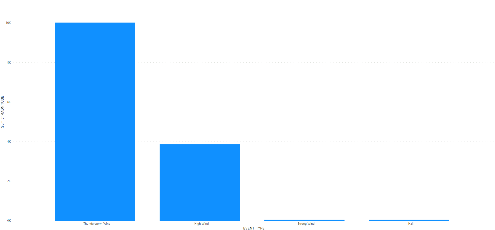

Safety Tips
In the summer months the most frequent storm types Utahns experience are thunderstorms and floods. Here are some safety tips to keep in mind
during the warmer months while living or travelling in Utah:
- Have a plan - make sure to visit the various resources linked to on this sites resources page to plan ahead.
- Safety Kits - wherever you live or travel to, make sure to have supplies on hand such as first aid, water, food and maintenance tools.
- Communication - ensure you have backup plan for communication such as radios and/or GPS devices that can help services locate you.
For the winter months in Utah, the same tips above apply, but of these additional tips are good to keep in mind:
- Warm Clothes - Make sure to dress appropriately for winter condtions and keep backup clothing in vehicle if possible.
- Vehicle Tires - Ensure vehicle tires are suitable for ice and snow conditions (make sure vehicle maintenance is good as well
to avoid breakdowns in extremely cold conditons.
Storm Data Info
It's important to know what storms you are likely to experience, where they occur, when they occur, and their severity.
Storm Location and Frequency
Storms Throughout the Year (most common storms)
Risks and Severity
